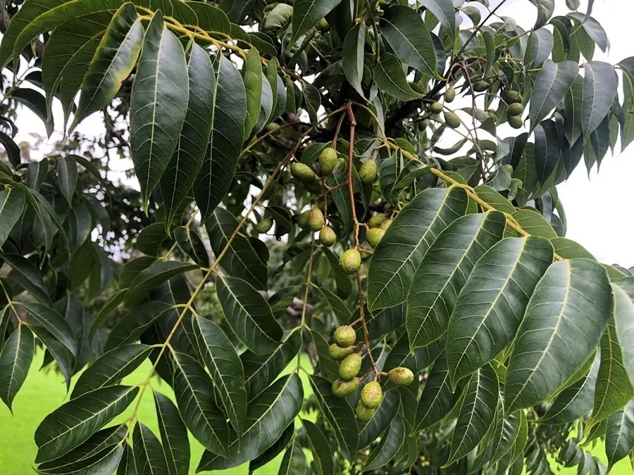

乔木 · 植物界
红椿 Toona ciliata

楝科香椿属落叶或半常绿乔木，木材红褐、纹理华丽，有中国桃花心木之称，是珍贵用材树种，被列为国家二级保护植物。
- 分类
- 门被子植物门纲木兰纲目无患子目科楝科属香椿属
- 栖息环境
- 海拔 300–1500 米的山地沟谷与疏林，喜温暖湿润、阳光充足
- 地理分布
- 中国广东、广西、云南、福建、海南、贵州；印度、缅甸、澳大利亚
- 保护级别
- 国家二级重点保护野生植物；IUCN 暂无评估
物种志
红椿为楝科香椿属落叶或半常绿乔木，高可达三十米，树皮灰褐色、呈条片状剥落，幼枝被短柔毛。偶数羽状复叶，小叶八至十二对，卵状披针形，边缘全缘或具稀疏锯齿。圆锥花序顶生或腋生，花小，白色，具香气，花期四至五月；蒴果长椭圆形，成熟时褐色并五瓣开裂，种子扁平具翅，果期十至十一月。
红椿分布于广东、广西、云南、福建、海南、贵州等地，印度、缅甸、澳大利亚等也有，多生于海拔三百至一千五百米的山地沟谷和疏林中。它喜温暖湿润和充足阳光，适宜深厚肥沃、排水良好的土壤，生长较快。木材红褐色、纹理通直美观、耐腐，是制作家具、胶合板和室内装修的优良用材，被誉为中国桃花心木；树皮可提取栲胶。由于天然资源过度采伐，被列为国家二级重点保护野生植物。
形态与习性
- 株高可达 30 m，树皮条片剥落
- 花期4–5 月，圆锥花序白色
- 果期10–11 月，蒴果五瓣开裂
- 光照喜光，幼树稍耐侧阴
- 水分喜湿润，忌积水
- 土壤深厚肥沃的壤土
- 主要用途高级家具、胶合板用材
趣味知识
- 红椿木材色泽红褐、纹理华丽，在国际市场上被称为中国桃花心木。
- 它的种子两端有翅，成熟后随风旋转飘落，传播距离较远。
- 红椿生长较快，二十年左右即可成材，是珍贵用材林的重点发展树种。